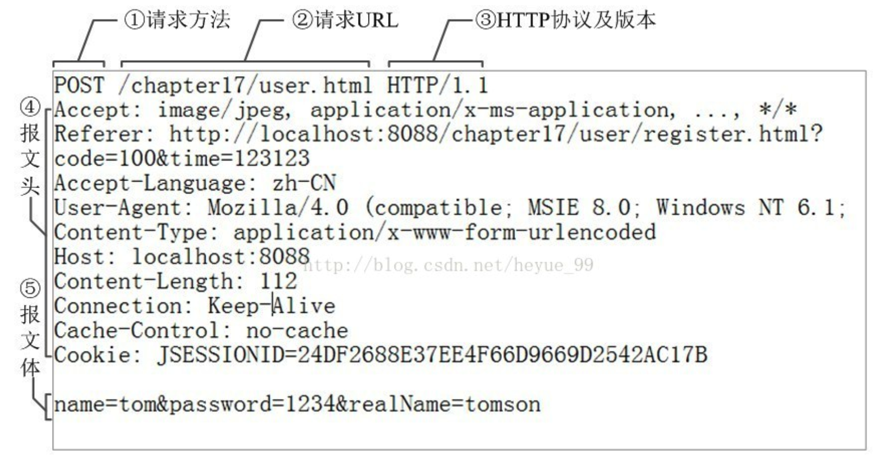
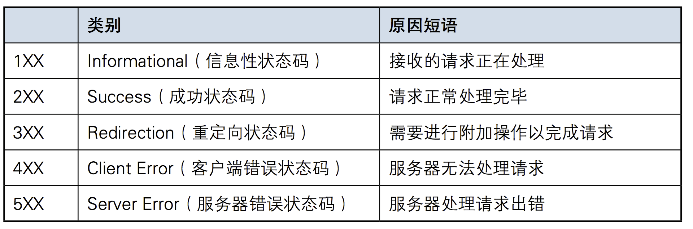
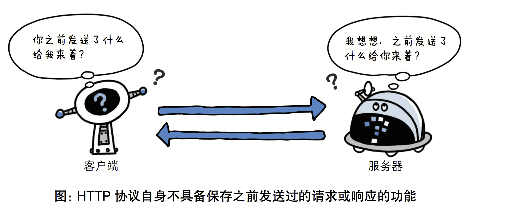

Http 协议简介
HTTP协议是Hyper Text Transfer Protocol（超文本传输协议）的缩写,是用于服务器与客户端之间传输超文本的传送协议。
超文本：超文本就是指“含有指向其他资源链接”内容的文本。大概就是，不仅仅是文字，还有多媒体：视频、图片、动画等。
协议：HTTP协议就是服务器（Server）和客户端（Client）之间进行数据交互（相互传输数据）的一种形式。
http协议包含由浏览器发送数据到服务器需要遵循的【请求协议】与服务器发送数据到浏览器需要遵循的【响应协议】。
Http 请求协议与响应协议
用于HTTP协议交互的信息被称为HTTP报文。请求端(客户端)的HTTP报文叫做请求报文,响应端(服务器端)的叫做响应报文。HTTP报文本身是由多行数据构成的字文本。
请求协议（重要）

请求头/报文头：
请求头中存储的是该请求的一些主要说明（自我介绍）。服务器据此获取客户端的信息。
accept:浏览器通过这个头告诉服务器，它所支持的数据类型
Accept-Charset: 浏览器通过这个头告诉服务器，它支持哪种字符集
Accept-Encoding：浏览器通过这个头告诉服务器，支持的压缩格式
Accept-Language：浏览器通过这个头告诉服务器，它的语言环境
Host：浏览器通过这个头告诉服务器，想访问哪台主机
If-Modified-Since: 浏览器通过这个头告诉服务器，缓存数据的时间
Referer：浏览器通过这个头告诉服务器，客户机是哪个页面来的 防盗链
Connection：浏览器通过这个头告诉服务器，请求完后是断开链接还是何持链接
X-Requested-With: XMLHttpRequest 代表通过ajax方式进行访问
User-Agent：请求载体的身份标识
报文体/请求体/请求参数：
常被叫做请求体/请求参数，请求体中存储的是将要传输/发送给服务器的数据信息。
请求方式: get与post请求
- GET提交的数据会放在URL之后，以?分割URL和传输数据，参数之间以&相连，如EditBook?name=test1&id=123456.
- POST方法是把提交的数据放在HTTP包的请求体中.
- GET提交的数据大小有限制（因为浏览器对URL的长度有限制），而POST方法提交的数据没有大小限制，且携带的请求数据不可以明文方式连接在url中。
响应协议（了解）

响应头：
响应头中存储的是该响应的一些主要说明（自我介绍）。客户端据此获取服务器的相关信息。
Location: 服务器通过这个头，来告诉浏览器跳到哪里
Server：服务器通过这个头，告诉浏览器服务器的型号
Content-Encoding：服务器通过这个头，告诉浏览器，数据的压缩格式
Content-Length: 服务器通过这个头，告诉浏览器回送数据的长度
Content-Language: 服务器通过这个头，告诉浏览器语言环境
Content-Type：服务器通过这个头，告诉浏览器回送数据的类型
Refresh：服务器通过这个头，告诉浏览器定时刷新
Content-Disposition: 服务器通过这个头，告诉浏览器以下载方式打数据
Transfer-Encoding：服务器通过这个头，告诉浏览器数据是以分块方式回送的
Expires: -1 控制浏览器不要缓存
Cache-Control: no-cache
Pragma: no-cache
响应体：
根据客户端指定的请求信息，发送给客户端的指定数据。
响应状态码：
状态码指的是是当客户端向服务器端发送请求时, 返回的请求结果。借助状态码,用户可以知道服务器端是正常受理了请求,还是出现了什么问题错误 。

Http 协议特性
基于请求－响应模式
HTTP协议规定,请求从客户端发出,最后服务器端响应该请求并返回。换句话说,肯定是先从客户端开始建立通信的,服务器端在没有接收到请求之前不会发送响应

无状态(重要)
HTTP协议自身不对请求和响应之间的通信状态进行保存。每当有新的请求发送时,就会有对应的新响应产生。协议本身并不保留之前一切的请求或响应的相关信息。
状态可以理解为客户端和服务器在某次“会话”中产生的数据，那无状态的就以为这些数据不会被保留，也就是说客户端和服务器之间的这次通信, 和下次通信之间没有直接的联系。如果会话中产生的数据是我们需要保存的，也就是说要“保持状态”。
何为会话？
会话是浏览器和服务器之间的多次请求和响应，为了实现某个功能，浏览器和服务器之间可能会产生多次的请求和响应，从浏览器访问服务器开始，到访问服务器结束，浏览器关闭为止，这期间产生的多次请求和响应加在一起就称为浏览器和服务器的一次会话。
说人话，会话可以理解为，我们打开了一个浏览器访问了目标的网站，浏览器就默认生成了一个会话，只要我们不关闭这个标签页，这个会话就一直存在，期间我们的站点产生的接口调用和服务器响应都属于这次会话的一部分。
可是,随着Web的不断发展,因无状态而导致业务处理变得棘手的情况增多了。 比如,用户登录到一家购物网站,即使他再次请求跳转到该站的其他页面后,也需要能继续保持登录状态。网站为了能够掌握是谁送出的请求,需要保存用户的状态。

HTTP/1.1虽然是无状态协议,但为了实现期望的保持状态功能, 于是引入了Cookie技术。有了Cookie再用HTTP协议通信,就可以管理状态了。